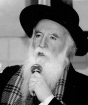

Hometown Hero
The life story of Rabbi Yosef Cohen, a rav in Ramla, begins with his childhood as an immigrant from Djerba, growing up in Ramla. From the city that was to become the symbol of crime and violence, he made his way to Tomchei T’mimim, where he learned from the renowned mashpia Reb Shlomo Chaim Kesselma

All this changed drastically in the past two decades. Rabbi Yosef Cohen calls it the “quiet revolution.” R’ Cohen is one of the old time rabbis of Ramla. He was born in Ramla and became interested in Chassidus. After he married, he sent a letter to the Rebbe in which he asked whether he should live in Shikun Chabad in Lud, which was beginning to develop at the time and was a place of Torah and Yiras Shamayim, replete with fine schools and a beautiful k’hilla, or near his parents in Ramla. The Rebbe’s answer was, “Do as the hanhala advises.” So, R’ Cohen lives in Ramla where he raised a family and helped many other families get on their feet. He serves as a neighborhood rav.
There is hardly anybody in Ramla who does not know R’ Cohen. The city has completely changed. Although there is still a large Arab population, shuls are opening all over and there are more and more baalei t’shuva, numerous kollels and kosher stores.
CHILDHOOD IN RAMLA
R’ Cohen was born in the fifties to a family that had just emigrated from the island of Djerba off of Tunisia. He still remembers his parents’ enthusiasm over their great privilege to be living in Eretz Yisroel. This feeling overshadowed the daily travails that were the lot of the new immigrants to the fledgling country.
“The immigrants from Djerba were sincere Jews who kept mitzvos with great love. That’s how it was in my home. Love for Torah and mitzvos shone through in the chinuch that my parents bequeathed me and my siblings. We were proud of our traditions.”
R’ Cohen’s connection with Chabad began in elementary school. In the morning he learned in the religious public school called Sinai. The only option for a religious child in Ramla in those days was to supplement his Torah study in a Talmud Torah in the afternoon and evening.
“I went there at my parents’ initiative and with the urging of the Lubavitchers who founded the place. The first teacher who taught us was R’ Tzvi Bernstock from Bat Yam. At night, he was replaced by R’ Moshe Goldstein a”h, who came everyday on his bicycle from Lud. We learned Chumash, Gemara and Mishnayos. We developed a great cheshek for learning. At night, we gathered together for another shiur in the shul and learned with Mr. Treblisi, a bearded city worker who started a shul in his home, and taught us children proper kria and how to lain in the nusach of Tunisia.
“The mashpia R’ Sholom Dovber Kesselman, who replaced R’ Goldstein, had a tremendous influence on me. He also came from Shikun Chabad in Lud and rode a bicycle.”
R’ Cohen remembers that one of the prizes that R’ Kesselman gave outstanding students was a ride on his bike.
“We would wait outside for him. He had a great love for children and we felt it. I became a Lubavitcher thanks to him because, when I finished sixth grade, he registered me in Yeshivas Tomchei T’mimim in Lud. Being an only son at the time, I was homesick. To R’ Kesselman’s disappointment, I left yeshiva, but he continued to take an interest in me.”
R’ Cohen went back to the religious public school and graduated. In the meantime, the Talmud Torah stopped operating, but young Yosef continued to learn on his own. When he was ready to enter ninth grade, R’ Kesselman went to his parents once again and convinced them to register him in yeshiva (as opposed to a public high school).
“My teacher and principal, who heard I was switching to a yeshiva, came to my house to convince my parents that I should continue where I was. They came with enticing offers like allowing me to skip a grade. In the end, it was decided that I would return to their school just until the end of the year. I wanted to learn in a yeshiva.”
He went to the yeshiva in Lud the following year, 5725. At that time, R’ Mordechai Shneur and R’ Zalman Feldman taught there, and their vast Torah knowledge impressed him immensely. The atmosphere in yeshiva transported him almost immediately to a different world than he was used to, one of farbrengens, shiurim, and above all else, the study of Chassidus that he was first encountering.
“I felt that I had come to the place I wanted to be in, a place of Torah, and that was the main thing.”
After three years, he switched to the yeshiva in Kfar Chabad. There he learned in R’ Moshe Yehuda Landau’s class, who today is the rav in B’nei Brak. Yosef sometimes accompanied R’ Landau on his trips from Kfar Chabad to B’nei Brak.
“On the way, he would talk in learning with the passengers about the sugiyos in Gemara that we learned in yeshiva.”
Twice a week, he would go with some other talmidim to give Tanya and Chassidus classes in yeshiva high schools.
ARIK’S INFLUENCE
It’s interesting that despite being connected to Chabad Chassidim since he was a child, the decision to become a Lubavitcher Chassid occurred thanks to Ariel Sharon.
“It was after the Six Day War. They told us that Arik Sharon, the army general, would be taking part in a farbrengen. Arik wanted to tell us about the yechidus he just had. It was after his little boy was playing with a loaded gun and had accidentally been killed. The Rebbe sent him a letter of consolation and Arik told us that it was the only letter that truly comforted him.
“Arik began talking about the Rebbe and he described the yechidus in such an amazing way. He did not stop praising the Rebbe and said he had met with a unique personality. I was a yeshiva bachur and hearing this kind of praise from a celebrated officer, whom everyone admired, affected me deeply. I remember his description of how the Rebbe interrogated him about the war until Arik said to the Rebbe, ‘I have no answers. I will return to Eretz Yisroel and study the subject and then I’ll come back and explain it to you.’ Arik added, ‘When I heard the Rebbe analyze the military moves and speak about the decisions the commanders had to make during the war, it seemed to me as though the Rebbe was repeating things he had heard in a military meeting.’
“I realized that all the stories that the Chassidim told about the Rebbe were not just stories said because they were Chassidim, but the Rebbe was truly someone unusual. Naturally, I wanted to travel to 770 for a year on K’vutza. I had a hard time convincing my parents, but when they saw that I had bought a round trip ticket, they gave their reluctant approval.”
WITH THE REBBE
At that period, the K’vutza year began on Pesach and ended after the following Pesach. Seeing the Rebbe was a transformative experience for R’ Cohen:
“In my first yechidus, I felt that I was speaking to someone through whom the Sh’china spoke. The Rebbe sat and read my note and then answered my questions. Words and sentences flowed from his lips and I was astounded. In that yechidus, I asked what to do about Chabad customs, whether I should do them just for myself or whether I should convince other family members to do them too. I had actually asked this question as soon as I started learning in Kfar Chabad, but at that time, the Rebbe’s answer was to consult with the hanhala. The rosh yeshiva, R’ Yaakov Katz, convinced me to take on the minhagim. Now in yechidus, I was asking about the rest of my family since my family kept minhagim of Djerba. The Rebbe’s answer was positive on condition that it would be done without pressure and in a pleasant manner. The results were that all my brothers eventually became Chabad Chassidim or friends of Chabad.”
During that extraordinary year, 5733-4, the Chassidim wanted to give the Rebbe a new recording of niggunim from Nicho’ach as a birthday present. Two Chassidim with musical abilities, R’ Moshe Teleshevsky and R’ Eliyahu Lipsker, took on the project. A list of niggunim was submitted to the Rebbe so he could make his selection. On the list, the Rebbe added, “Niggun from Morocco.” At first, they did not know which niggun the Rebbe was referring to and they presented three possibilities. The Rebbe chose “Ozreini Keil Chai” and R’ Cohen sang the solo.
“Some time later, on Motzaei Shvii Shel Pesach, a few days before our return to Eretz Yisroel, I passed by the Rebbe for kos shel bracha. Even before I reached the Rebbe, the Rebbe pointed at me, which naturally made all the Chassidim look at me. I did not understand what was going on, but someone suggested that the Rebbe wanted me to sing “Ozreini Keil Chai.” The Beis Midrash fell silent and I sang the niggun. Soon, everyone joined in and the Rebbe encouraged the singing with both of his hands. It was a momentous occasion for me. Things like this you never forget.”
COMING FULL CIRCLE
After he married, R’ Cohen settled in Ramla. Since then, he has been working nonstop in a city that had been spiritually barren. True, his parents’ generation of new immigrants had been attached to tradition, but the second and third generations had broken away. The youth of Ramla grew up in an atmosphere disconnected from their Torah roots.
“You needed a bulldozer to change the situation. The old timers are amazed by the changes.”
Ramla did not turn into B’nei Brak or Yerushalayim, but the sight of frum people, large families and packed shuls is typical and no longer rare.
“My first trial by fire was Mivtza T’fillin. I stood in the street for hours with my tzitzis out and offered t’fillin. Today, it’s not unusual but back then it was daring.”
When I asked R’ Cohen about his role as rav, he answered tersely, “U’faratzta.” Then he explained, “When I officiate at a marriage, I don’t just perform the ceremony but look for a way to say Divrei Torah and Chassidus. The same is true for everything. Every mitzva is done with a special flavor. At first, I would bring children to my house and teach them Torah and Chassidus, just as others did for me when I was a boy. Many children who learned with me when they were little remember the experience till today. Many of them are frum.”
R’ Cohen feels bad that unlike when he first started out, when he had time to give shiurim, today, due to his many responsibilities, his time is limited for the thing he loves most.
“I head an organization of people who give shiurim. Every year, more shiurim are added for both men and women and I run the project. We are greatly helped by the Lubavitchers who live in Shikun Chabad in Lud. They come and give shiurim on a wide variety of topics, from Halacha to Gemara to Chassidus and minhagim.
“Aside from the rabbanim, there are many people in the city involved in outreach and teaching Torah. There are heads of kollels and gabbaim of shuls and they all respect Chabad. We had a hand in nearly everything Jewish that happened here. R’ Topol, who opened the first Chabad house in Ramla, would come from Rechovos and helped us tremendously. Today, there are a number of shluchim here including R’ Avrohom Madwill and others.”
He considers his success as due to his being a child of Ramla:
“I was born here. We have good connections even with those who are not religiously observant, including soccer players who attended school with me. When they meet us, they treat us with respect. They don’t feel that I preach to them. What has happened in Ramla in the past twenty years is extraordinary. Go take a walk and you will see how many religious Jews there are. This revolution is thanks to the Rebbe. He guided us and above all else, he endowed us with the strength. Others who operate here and don’t belong to Chabad are lacking the Ahavas Yisroel that Chabad has. I attribute our success to the Rebbe’s approach, which is belief in the potential within every Jew, knowing that even when he says things to you that aren’t good, you will be able to break through if you speak to him pleasantly.
“I can give you examples. Many people call us with marital problems. I go to their house and begin by establishing the fact that a rabbi has arrived. I talk to them and emphasize Jewish ideas. When necessary, I bring up checking mezuzos. Thus, step by step, without pointing at a specific problem, the house undergoes a transformation. Only a Chassidishe rav has this mindset. The revolution that ensues is not confined to that one house, but continues to the neighbors and eventually affects the entire neighborhood.”
Jewish activity in Ramla was done quietly in the past, if at all, but upon the arrival of R’ Cohen and his appointment as rav, major changes took place.
“Over time, I taught people and encouraged open religious activity with Jewish pride. I remember that we had a staff meeting before Chanuka and I said that we had to arrange a large gathering. In order to attract a crowd, I said we should have a band and other things that would draw people in. The religious council leader vetoed the idea and did not approve the budget. He said the council had arranged a gathering not long before, but attendance had been poor and did not justify the outlay of money.
“I said I would take the responsibility to bring people if he gave the money. The gathering, which took place in the big shul, was well attended.”
R’ Cohen organizes programs for children under the auspices of the local kollel network, which provides the finances.
Kashrus in Ramla has also undergone a major change in recent years. Whoever visits the city will be surprised to find many stores and restaurants with Mehadrin kashrus.
“I saw that if you first are mekarev the owner so he understands the importance of kashrus, he ends up cooperating.”
Today, R’ Cohen’s main work is in establishing kollels. “We went from nothing to a network of kollels all over the city.”
When we discussed the Chassidic dimension of his work, R’ Cohen smiled and stressed that often people ask him: What is your connection to Chabad when you were always religious?
“I always tell them that they should know that it’s only thanks to Chabad that the city has changed so drastically. Today, there are many kiruv organizations that operate here. They are flourishing thanks to Chabad having paved the way. In my humble opinion, the big change in Ramla is not about the number of men learning in kollel. The real change is in the simple people who have developed a connection with Judaism, and this is primarily thanks to the Rebbe. Only someone who learns Chassidus understands what a Jewish neshama actually is and that Torah and mitzvos are not the private domain of one who studies Torah; they belong to every Jew.”
MIRACLES IN RAMLA
Over the years, R’ Cohen has acquired many students, some of whom have become very involved in Jewish life, Chassidus and the Rebbe. Even those who have not become Lubavitch have become great admirers of the movement.
“One of these talmidim is Dovid Ohana who became a Lubavitcher. At some point, he told me that he and his wife were waiting for the bracha of children, but at the last exam they were told the fetus had some problem. His wife was in a terrible state and I advised him to write to the Rebbe. The answer he opened to said to check t’fillin and mezuzos. He was taken aback because he had just bought expensive t’fillin from a G-d fearing sofer.
“I convinced him to check them again regardless, and incredibly, entire words were missing! He was in utter shock. Of course he replaced them with another pair and the birth was fine and the baby was healthy.”
At a zeved bat that he attended, R’ Dovid told the crowd about the miracle that had occurred. Later on, he led the first charge in the area of kashrus when he opened a kiosk where all the products were Badatz kashrus. Thanks to him, many Jews eat kosher.
“I’ll tell you another miracle story. An old timer from Ramla, whose family name is Sarusi and who is a well-known person here whose family maintains a large shul, lost his ability to speak. There were no warning signs. It came out of the blue. He came to me and conveyed the problem as best he could. I quickly sent the Rebbe’s office a request for a bracha for him. The answer of ‘Bracha V’hatzlacha’ arrived within a few days.
“On Yom Kippur after the davening, the man suddenly banged on the table and began speaking normally again, as though nothing had happened. The story was spoken about everywhere and was even written up in Maariv. The doctors could not explain how his voice had disappeared and how it had returned.”
R’ Cohen says the miracles continue through the Igros Kodesh and he has many stories to tell:
“The mother of someone who davens with my brother in the shul in our neighborhood was hospitalized in serious condition. The situation continued to deteriorate. The doctors decided that only a complicated operation, whose outcome was uncertain, could help. My brother advised him to write to the Rebbe. After a few days, the friend told my brother that the moment he finished writing to the Rebbe, his mother began seeing encouraging signs of recovery. The body miraculously managed to overpower the disease, and she was released from the hospital that same day. The doctors were stunned and could not understand how this had happened so suddenly.”
In Ramla there is great awareness about the Geula:
“I’ll never forget what Motty Yitzchaki, today the mayor, said. He credits Chabad with raising awareness of the Geula, not as something that you learn or read about but as a tangible reality.”
Although R’ Cohen does not operate in the official capacity of a Chassidic rav, he is identified by all as a Chabad Chassid.
“The reality is such that people know that if you are Lubavitch, you are single-minded about the Geula. It makes no difference how much you hide; when you talk to someone, he will bring it up. On house calls or when attending simchas or ch”v, houses of mourning, I always talk about the Geula. There is no shiur or lecture without some part of it devoted to talking about the Geula and the rebuilding of the Beis HaMikdash.”
R’ Cohen takes great pride in his two sons who follow in his footsteps for they both serve as rabbanim. They attended the yeshiva in Tzfas. R’ Shimon Cohen is a dayan in Tzfas and R’ Menachem Cohen leads a k’hilla in Beer Sheva and writes a weekly column on questions about Geula.
ANOTHER YECHIDUS
R’ Yosef Cohen relates:
After I got married, I had another yechidus. Today, I am known as a calm person who is hard to anger, but at that time, it was easy to anger me. I attribute this change to the Rebbe’s bracha in that yechidus.
At that time, it was possible to buy land in Rechovos at a cheap price. I asked the Rebbe whether I should recommend to my parents that they buy land so they would have an income from it in the future.
The Rebbe said: Why do you need the pizur ha’nefesh (lack of serenity) in all this?
Since then, I keep my distance from anything that causes pizur ha’nefesh.
I also asked the Rebbe whether I should study mila. The Rebbe said to do as a rav of my eida recommends. I did not understand this answer at the time, but later on, R’ Chabad of Lud referred me to R’ Machpoud of B’nei Brak, who taught me an interesting and original approach according to the custom of my eida.
My brother joined me on that trip to New York, and I asked whether he should look into a shidduch. I asked this question at the end because I understood from my brother that the topic wasn’t practical for him at that time. Yet the Rebbe responded positively to this with three exclamation marks. We did not understand the rush since he was young, but our mother died not long afterward and then we felt how much a shidduch would have been a good idea.
Nosson Avrohom. "Hometown Hero." Beis Moshiach, no. 857 (November 21, 2012).